Pouring a drink
Pour the Pepsi into the cup and put the can back.
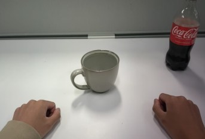
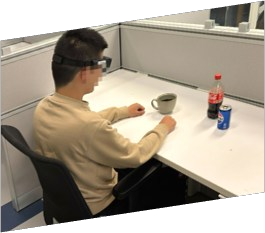
We introduce EgoForge, a framework for generating goal-directed first-person video from an image and an instruction, with an optional external view providing additional context. Reward-guided refinement aligns the video with the intended goal while preserving scene consistency and coherent motion.
Pour the Pepsi into the cup and put the can back.


Take two shots at the basketball hoop.
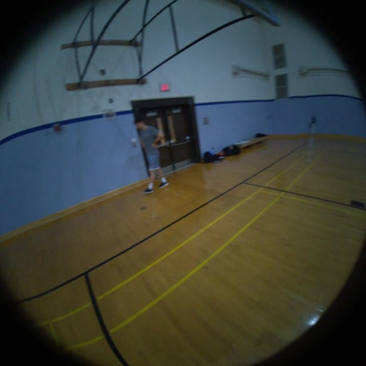
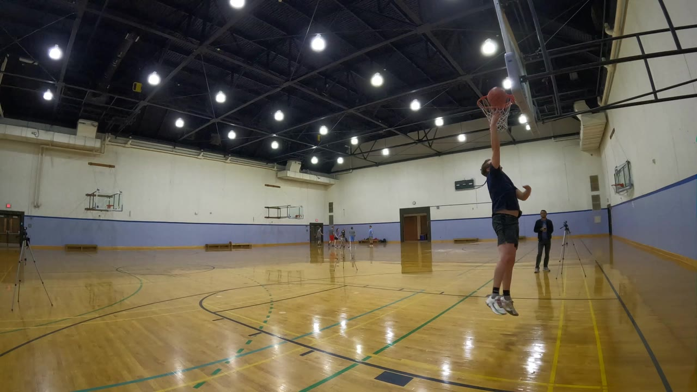
Put the pack into the bag and place the bag on the bed.
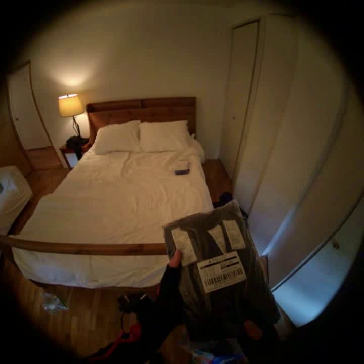
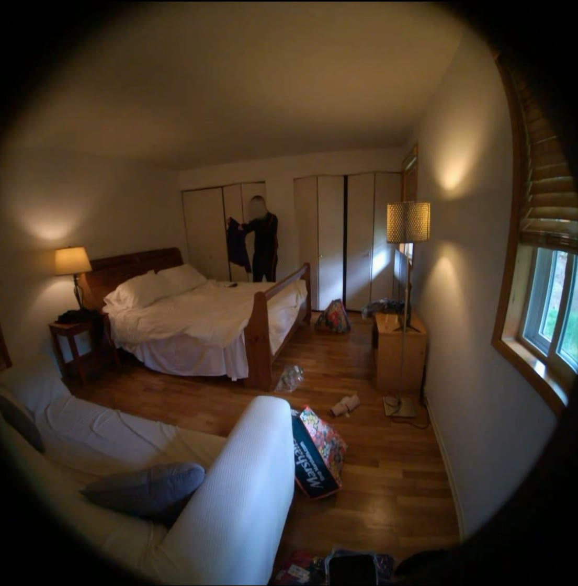
An egocentric image, a goal instruction, and an external reference guide each generated first-person rollout.
Generative world models have shown promise for simulating dynamic environments, yet egocentric video remains challenging due to rapid viewpoint changes, frequent hand–object interactions, and goal-directed procedures whose evolution depends on latent human intent. Existing approaches either focus on hand-centric instructional synthesis with limited scene evolution, perform static view translation without modeling action dynamics, or rely on dense supervision such as camera trajectories, long video prefixes, or synchronized multi-camera capture.
In this work, we introduce EgoForge, an egocentric goal-directed world simulator that generates coherent, first-person video rollouts from minimal static inputs: a single egocentric image, a high-level instruction, and an optional auxiliary exocentric view. To improve intent alignment and temporal consistency, we propose GRAFT, a trajectory-level reward-guided refinement that optimizes goal completion, temporal causality, scene consistency, and perceptual fidelity during diffusion sampling. Extensive experiments show EgoForge achieves consistent gains in semantic alignment, geometric stability, and motion fidelity over strong baselines, and robust performance in real-world smart-glasses experiments.
EgoForge turns a single first-person image and a goal instruction into a video rollout. An optional external view adds scene context, while geometry alignment and GRAFT trajectory rewards strengthen spatial consistency and goal alignment.
The egocentric image, instruction, and optional external reference condition the diffusion transformer through adaptive normalization and cross-attention. A pretrained video autoencoder maps between video frames and latent representations.
Geometry features from a pretrained VGGT encoder guide intermediate diffusion features. Angular alignment matches feature direction, while scale alignment matches feature magnitude and prevents scale collapse.
GRAFT uses negative-aware fine-tuning with rewards evaluated over complete video trajectories, aligning the rollout with the requested goal and its visual context.
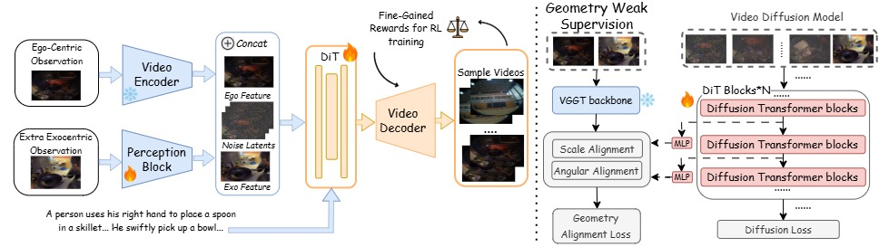
Quantitative comparisons on the X-Ego benchmark. EgoForge outperforms all baselines across semantic, perceptual, and temporal metrics.
| Model | DINO-Score↑ | CLIP-Score↑ | SSIM↑ | LPIPS↓ | FVD↓ | Flow MSE↓ | PSNR↑ |
|---|---|---|---|---|---|---|---|
| EgoDreamer | 42.35 | 25.40 | 0.58 | 0.35 | 580.45 | 8.15 | 15.20 |
| Handi | 31.12 | 18.25 | 0.42 | 0.52 | 912.30 | 14.50 | 12.85 |
| Cosmos | 49.42 | 29.77 | 0.70 | 0.26 | 448.12 | 6.40 | 18.73 |
| HunyuanVideo | 53.54 | 29.43 | 0.71 | 0.26 | 384.31 | 6.10 | 18.88 |
| WAN2.2 | 53.99 | 35.69 | 0.72 | 0.23 | 322.17 | 5.78 | 20.44 |
| EgoForge (Ours) | 61.25 | 39.30 | 0.79 | 0.15 | 182.25 | 2.83 | 24.08 |
Quantitative comparisons with enhanced baseline variants (+EV: exo-view image; +TT: text-only domain adaptation; +CI: our conditioning inputs with Geometry Weak Supervision). EgoForge still achieves best results across all seven metrics.
| Model | DINO-Score↑ | CLIP-Score↑ | SSIM↑ | LPIPS↓ | FVD↓ | Flow MSE↓ | PSNR↑ |
|---|---|---|---|---|---|---|---|
| Cosmos+EV | 48.60 | 29.60 | 0.67 | 0.28 | 485.75 | 6.82 | 18.30 |
| Cosmos+TT | 50.80 | 30.40 | 0.71 | 0.25 | 433.90 | 6.31 | 18.88 |
| HunyuanVideo+EV | 52.80 | 29.20 | 0.70 | 0.27 | 405.87 | 6.30 | 18.61 |
| HunyuanVideo+TT | 54.10 | 29.86 | 0.72 | 0.24 | 365.80 | 5.95 | 19.10 |
| WAN2.2+EV | 52.91 | 35.11 | 0.71 | 0.27 | 352.41 | 6.25 | 20.05 |
| WAN2.2+TT | 54.80 | 36.20 | 0.73 | 0.25 | 310.57 | 5.60 | 20.64 |
| WAN2.2+CI | 58.92 | 38.05 | 0.76 | 0.18 | 218.72 | 3.92 | 22.87 |
| EgoForge (Ours) | 61.25 | 39.30 | 0.79 | 0.15 | 182.25 | 2.83 | 24.08 |
User study (1–5 scale, 20 annotators, 25 video groups). EgoForge achieves substantial gains in Alignment (4.75) and Fidelity (4.71). * denotes the best enhanced baseline variants.
| Model | Quality↑ | Fidelity↑ | Smooth Motion↑ | Smooth Env.↑ | Alignment↑ |
|---|---|---|---|---|---|
| Cosmos* | 3.29 | 2.54 | 3.07 | 2.47 | 2.19 |
| Hunyuan* | 3.46 | 2.86 | 3.72 | 3.16 | 3.08 |
| WAN2.2* | 3.22 | 3.48 | 3.82 | 4.07 | 3.15 |
| EgoForge (Ours) | 4.58 | 4.71 | 4.25 | 4.48 | 4.75 |
Ablation on EgoForge modules (FT = Denoising Fine-Tuning, GWS = Geometry Weak Supervision). Each component consistently improves performance, with the full model achieving best results.
| FT | GWS | GRAFT | DINO↑ | CLIP↑ | SSIM↑ | LPIPS↓ | FVD↓ | Flow MSE↓ | PSNR↑ |
|---|---|---|---|---|---|---|---|---|---|
| ✓ | ✗ | ✗ | 56.81 | 37.10 | 0.74 | 0.21 | 260.89 | 4.82 | 21.92 |
| ✓ | ✓ | ✗ | 58.92 | 38.05 | 0.76 | 0.18 | 218.72 | 3.92 | 22.87 |
| ✓ | ✓ | ✓ | 61.25 | 39.30 | 0.79 | 0.15 | 182.25 | 2.83 | 24.08 |
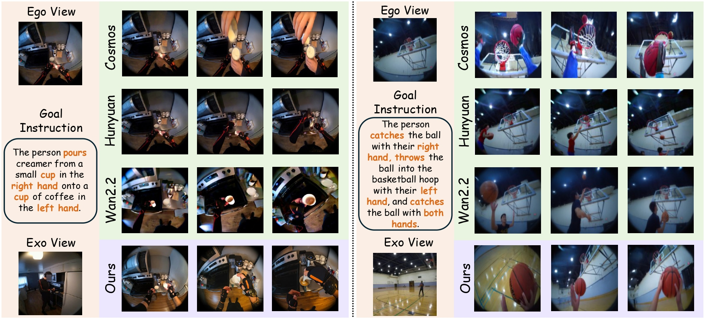
Qualitative comparison between EgoForge and baselines. EgoForge accurately reconstructs multi-step, causally ordered actions, preserving hand–object geometry, temporal consistency, and goal alignment. In the first example (coffee pouring), Cosmos erroneously generates a third hand, Hunyuan depicts a disconnected arm, and Wan2.2 fails to complete the task. In the second example (basketball), Cosmos generates multiple balls, while Hunyuan and Wan2.2 generate an incorrect person. EgoForge accurately completes both tasks.
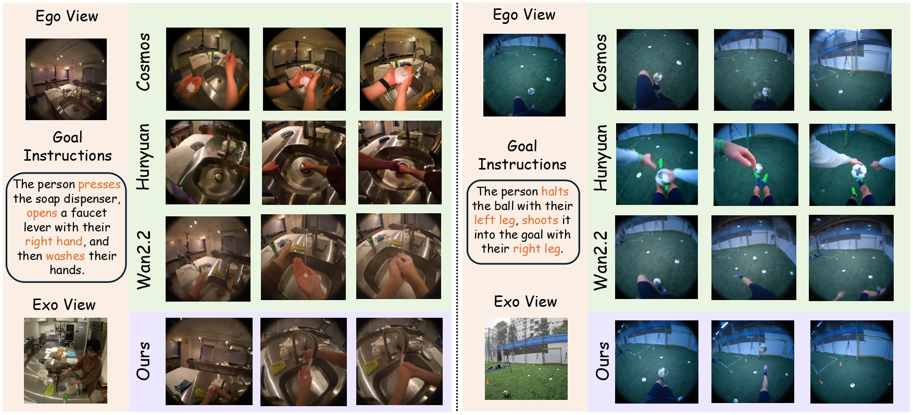
Qualitative comparison: hand-washing task (top) and soccer task (bottom). In the hand-washing task, baselines struggle with object consistency (Cosmos hallucinates the soap source; Wan2.2 bypasses the on-table soap), while EgoForge successfully executes the action using existing objects. In the soccer task, baselines exhibit ghosting (Cosmos) or fail to follow precise instructions (Hunyuan, Wan2.2). EgoForge accurately traps with the left leg and shoots with the right.
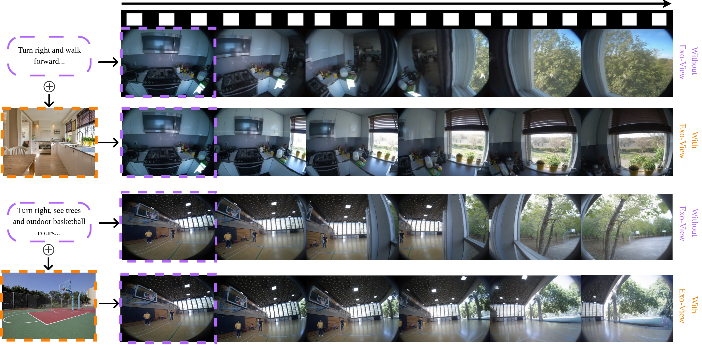
Qualitative comparison of EgoForge with vs. without exocentric input. Rows 1 & 3 ("Without Exo-View") use text prompt alone; Rows 2 & 4 ("With Exo-View") additionally provide an auxiliary exocentric image. The kitchen scene (Row 2) correctly incorporates the potted plants on the windowsill from the reference image; the basketball court scene (Row 4) adopts the red and green rubberized surface. EgoForge can be successfully steered toward simulations that inherit key semantic and stylistic properties from the reference exo-view.
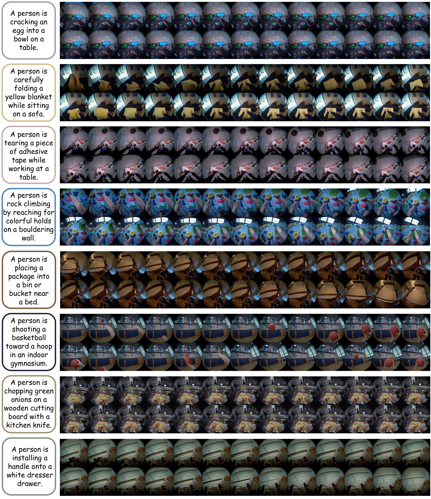
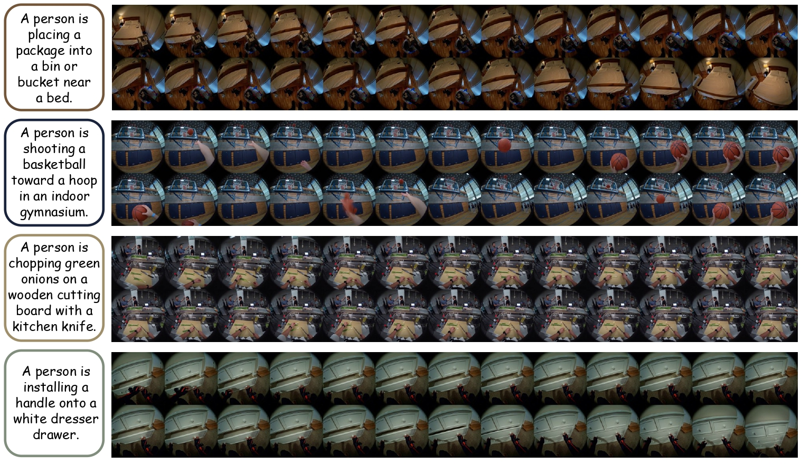
Dense visualization of long-duration sequences. We present 26 frames from each of 8 videos generated by EgoForge — cracking an egg, folding a blanket, tearing adhesive tape, rock climbing, placing a package, shooting a basketball, chopping onions, and installing a drawer handle — to highlight seamless transitions and stable dynamics in complex egocentric tasks.
@article{shen2025egoforge,
title={EgoForge: Goal-Directed Egocentric World Simulator},
author={Shen, Yifan and Liu, Jiateng and Li, Xinzhuo and Liu, Yuanzhe and Li, Bingxuan and Yang, Houze and Jia, Wenqi and Li, Yijiang and Yu, Tianjiao and Rehg, James Matthew and Cao, Xu and Lourentzou, Ismini},
journal={arXiv preprint arXiv:2603.20169},
year={2026}
}